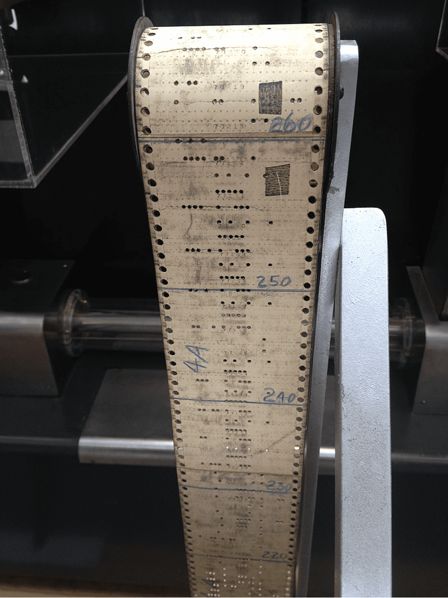

.svg)
Первые языки программирования
В предыдущей статье была рассмотрена архитектура компьютеров, которая в итоге легла в основу современных вычислительных машин. Но эти машины не могли работать без указаний. Рассмотрим как и с помощью чего они их получали.
В самых первых компьютерах программы считывались с перфоленты (как в Z3 и Mark I). Устройство чтения перфоленты предоставляло управляющему устройство код операции для каждой инструкции и адреса памяти. Затем управляющее устройство все это декодировало, посылало управляющие сигналы вычислительному блоку и памяти. Набор инструкций жестко задавался в схеме, каждая машинная инструкция (сложение, сдвиг, копирование) реализовывалась непосредственно в схеме. В ENIAC для изменения программы его нужно было перекоммутировать заново, на что уходило значительное время. Машинные коды считают первым поколением языков программирования.
Перфорированная лента с программой вычислений
Первые программисты всегда имели при себе блокнот, в который они записывали наиболее употребляемые подпрограммы — независимые фрагменты программы, вызываемые из главной подпрограммы, например извлечение корня или вывод символа на дисплей. Проблема состояла в том, что адреса расположения переменных и команд менялись в зависимости от размещения в главной программе. Для решения этой проблемы кембриджские программисты разработали набор унифицированных подпрограмм (библиотеку), которая автоматически настраивали и размещали подпрограммы в памяти. Морис Уилкс, один из разработчиков EDSAC (первого практически реализованного компьютера с хранимой в памяти программой), назвал библиотеку подпрограмм собирающей системой (assembly system). Теперь не нужно было собирать программу вручную из машинных кодов, специальная программа (ассемблер) «автоматически» собирала программу. Первые ассемблеры спроектированы Кэтлин Бут в 1947 под ARC2 и Дэвидом Уилером в 1948 под EDSAC. При этом сам язык (мнемоники) называли просто множеством базовых команд или начальными командами. Использовать слово «ассемблер» для процесса объединения полей в командное слово начали в поздних отчетах по EDSAC. Ассемблер можно назвать вторым поколением языков.
«Начальные команды» для EDSAC
Итог
Компьютеры не могут работать без подачи внешних указаний человеком. На заре появления программируемых компьютеров делать это было очень сложно. Намного сложнее, чем сейчас. Поэтому следует сказать спасибо тем изобретателям и учёным, которые смогли сделать программирование компьютеров прозрачнее.